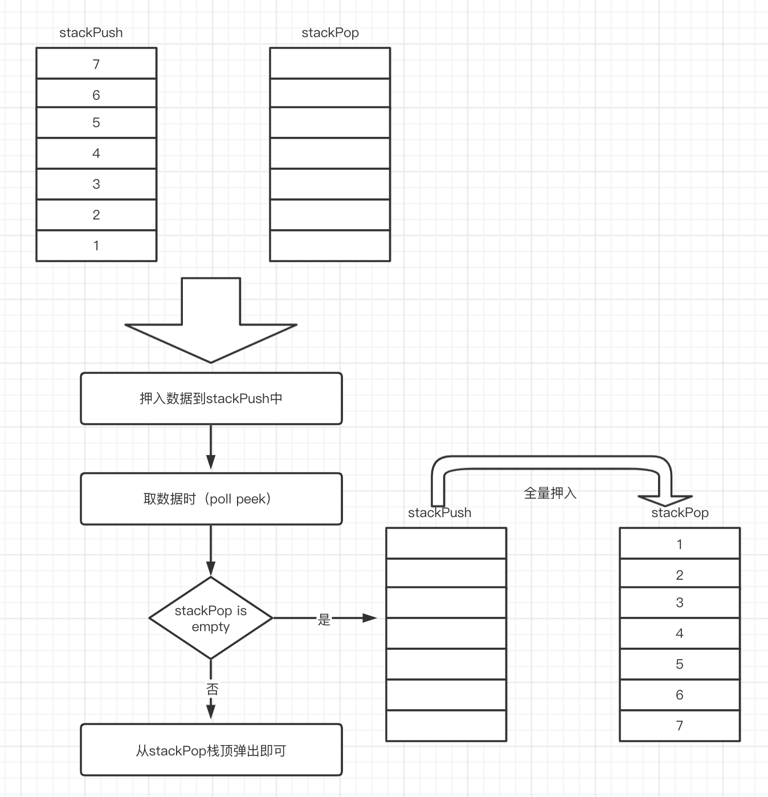

由两个栈组成的队列
题目
实现一个由两个栈组成的队列的接口，支持队列的基本操作：add、poll、peek。
实现思路:
栈：FILO
队列：FIFO
所以可以使用两个栈，正好将顺序调换从而实现类似队列的操作。
具体实现：
一个栈作为押入栈stackPush， 一个栈作为输出栈stackPop。押入时，正常将数据押入至stackPush。然后将数据弹出从stackPop栈中取出，这样栈的数据就可以实现队列的操作。注意: 1.stackPop栈，如果不为空，则不能将stackPush的数据押入栈中，也就是必须要将stackPop栈中的全部数据全部弹出后，才能押入数据。2. 在押入数据时，必须将stackPush栈的全部数据一次性全部押入stackPop栈中。
在押入stackPop的时机，在poll时，如果stackPop为空，则可以全部押入stackPush栈中的数据；在peek时，如果stackPop栈为空，也要将stackPush栈中的数据全部押入道stackPop中。
图示说明

实现代码
go中实现栈结构和接口
1
2
3
4
5
6
7
8
9
10
11
12
13
14
15
16
17
18
19
20
21
22
23
24
25
26
27
28
29
30
31
32
33
34
35
36
37
38
39
40
41
42
43
44
45
46
47
48
49
50
51
52
53
54
55
56
57
58
59
60
61
62
63
64// 构造一个栈,实现add poll peek string接口
type Stack interface {
Add(interface{})
Poll()(interface{}, error)
Peek()(interface{}, error)
String()string
IsEmpty()bool
}
// 构造一个保存栈数据的结构体
type StackData struct {
Data []interface{}
Length int
}
// 使结构体逐一实现Stack全部接口
// 向栈添加数据
func (s *StackData) Add(data interface{}) {
s.Data = append(s.Data, data)
s.Length ++
}
// 栈弹出数据
func (s *StackData) Poll()(data interface{}, err error) {
if s.Length == 0 {
return nil, errors.New("stack is empty")
} else {
data = s.Data[s.Length-1]
s.Length --
s.Data = s.Data[:s.Length]
return data, nil
}
}
// 获取栈顶数据
func (s *StackData) Peek()(data interface{}, err error) {
if s.Length == 0 {
return nil, errors.New("stack is empty")
} else {
data = s.Data[s.Length-1]
return data, nil
}
}
// 输出栈的字符串信息
func (s *StackData) String()string {
return fmt.Sprint(s.Data)
}
// 判断栈是否为空
func (s *StackData) IsEmpty()bool {
if s.Length == 0 {
return true
}
return false
}
// 构造函数,初始化栈的信息
func InitStack() *StackData{
s := new(StackData)
s.Data = []interface{}{}
s.Length = 0
return s
}使用双栈实现一个队列代码
1
2
3
4
5
6
7
8
9
10
11
12
13
14
15
16
17
18
19
20
21
22
23
24
25
26
27
28
29
30
31
32
33
34
35
36
37
38
39
40
41
42
43
44
45
46
47
48
49
50
51
52
53
54
55
56
57
58
59
60
61
62
63
64
65
66
67
68
69
70
71
72
73
74
75
76
77
78
79
80
81
82
83
84
85
86
87
88
89
90
91
92
93
94
95
96
97
98
99package main
import (
"errors"
"fmt"
)
// 实现一个接口,使用双栈实现队列的接口
type DoubleStackForQueueInterface interface {
Add(interface{})
Poll()(interface{}, error)
Peek()(interface{}, error)
}
// 定义一个结构体,保存两个栈信息
type DoubleStack struct {
StackPush StackData
StackPop StackData
}
// 实现双栈队列接口的全部方法
// ADD添加数据,栈的长度
func (d *DoubleStack) Add(data interface{}) {
d.StackPush.Add(data)
}
// 弹出队列的数据,先判断stackPop是否为空,如果为空,则全部添加stackPush的数据信息
func (d *DoubleStack) Poll()(data interface{}, err error) {
if d.StackPop.IsEmpty() {
// 全量压入
for !d.StackPush.IsEmpty() {
di,_ := d.StackPush.Poll()
d.StackPop.Add(di)
}
}
data, err = d.StackPop.Poll()
return data, err
}
// 获取当前队列中的数据信息
func (d *DoubleStack) Peek()(data interface{}, err error) {
if d.StackPop.IsEmpty() {
// 全量压入
for !d.StackPush.IsEmpty() {
di,_ := d.StackPush.Poll()
d.StackPop.Add(di)
}
}
data, err = d.StackPop.Peek()
return data, err
}
func main() {
stackPush := InitStack()
stackPop := InitStack()
doublequeue := DoubleStack{
StackPush: *stackPush,
StackPop: *stackPop,
}
doublequeue.Add(4)
doublequeue.Add(3)
doublequeue.Add(2)
fmt.Println(doublequeue.StackPush.String(), doublequeue.StackPop.String())
d1, _ := doublequeue.Poll()
fmt.Println(d1)
d2, _ := doublequeue.Peek()
fmt.Println(d2)
doublequeue.Add(1)
doublequeue.Add(0)
fmt.Println(doublequeue.StackPush.String(), doublequeue.StackPop.String())
d3, _ := doublequeue.Poll()
fmt.Println(d3)
d4, _ := doublequeue.Poll()
fmt.Println(d4)
fmt.Println(doublequeue.StackPush.String(), doublequeue.StackPop.String())
d5, _ := doublequeue.Poll()
fmt.Println(d5)
fmt.Println(doublequeue.StackPush.String(), doublequeue.StackPop.String())
}
输出信息如下：
押入后数据，stackPush为押入，stackPop为空
[4 3 2] []
弹出队列第一个押入的：
4
获取当前队列第一个：
3
继续押入1，0，stackPush押入，stackPop不动
[1 0] [2 3]
继续弹出队列数据
3
2
此时stackPop为空，stackPush有后押入的1，0
[1 0] []
在此弹出，弹出1，此时stackPush为空，stackPop中有1，0，1被弹出
1
最后只剩下0
[] [0]
押入顺序与输出顺序一致